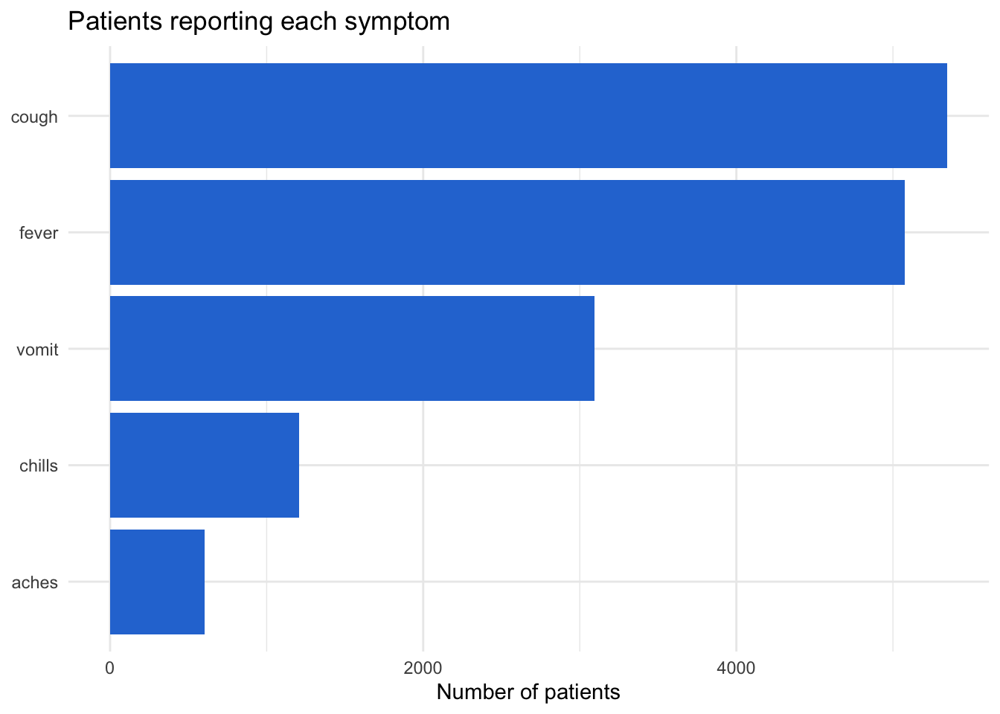

library(tidyverse)
library(here)
library(rio)
linelist <- import(here("processed_data", "combined_linelist.rds"), trust = TRUE)Session 4: Data Structures — Vectors, Lists, Subsetting, and Reshaping
Vectors and types, vectorized calculations, base-R subsetting, lists, tidy data, and pivoting
NoteIn this session you will learn to
- Explain that every column of a data frame is a vector with one type
- Use vectorized calculations and comparisons (and explain why
mutate()needs no loop) - Subset vectors and data frames with base R (
[ ],$,[[ ]]) and compare it withfilter()/select() - Explain what a list is, and pull results out of one (including the result of a statistical test)
- Describe tidy data, and reshape between wide and long with
pivot_longer()andpivot_wider()
Before you start: open the workshop folder in Positron (File → Open Folder…) and open student_scripts/Session 4 - Data Structures_STUDENT.R. This session starts from the finished data of Session 3: processed_data/combined_linelist.rds and processed_data/measles_final.rds. Missed Session 3? Ready-made copies of both files are already in processed_data/.
Sessions 1–3 used tidyverse functions that hide how R stores data. Today you look under the hood: vectors and vectorization explain why mutate() works on a whole column at once, base-R subsetting is everywhere in help pages and other people’s code (and you will need it to write functions in Session 8), lists are how R stores test and model results, and reshaping is needed for many summaries and plots.
Part 1: Set up
Part 2: Vectors and types
A vector is a set of values of the same type. Every column of a data frame is a vector. $ pulls one column out:
ages <- linelist$age_years
head(ages)[1] 2 3 56 18 3 16length(ages)[1] 6451length() tells you how many values a vector has: 6451, one per row of linelist.
The main types
| Type | Example | class() says |
|---|---|---|
| Number | 38.5, 2 |
"numeric" |
| Text | "male", "Recover" |
"character" |
| TRUE/FALSE | TRUE, FALSE |
"logical" |
| Date | as.Date("2014-05-13") |
"Date" |
| Factor | categories with an order | "factor" |
class(linelist$age_years)[1] "numeric"class(linelist$gender)[1] "character"class(linelist$onset_date)[1] "Date"One type per vector
If you mix types, R converts everything to the most flexible type — usually text. This is why a single “unknown” turned the whole age column into text in Session 1:
c(1, 2, "unknown")[1] "1" "2" "unknown"c(1, TRUE, FALSE) # TRUE becomes 1, FALSE becomes 0[1] 1 1 0Missing values spread
Any calculation with NA gives NA, unless you tell R to skip them:
mean(c(38, 39, NA))[1] NAmean(c(38, 39, NA), na.rm = TRUE)[1] 38.5Part 3: Vectorization
R does most calculations on every element of a vector at once. No loop needed:
temps_c <- c(36.8, 38.5, 40.1)
temps_c * 9 / 5 + 32[1] 98.24 101.30 104.18That is exactly what happens inside mutate(): the calculation runs on the whole column.
# Weight in pounds for every patient, in one line
head(linelist$wt_kg * 2.2)[1] 59.4 55.0 200.2 90.2 79.2 123.2Comparisons are vectorized too
A comparison gives a logical vector, one TRUE/FALSE per element:
temps_c > 38[1] FALSE TRUE TRUETRUE counts as 1 and FALSE as 0, so:
sum()of a comparison counts the TRUEsmean()of a comparison gives the proportion that are TRUE
sum(linelist$temp > 38, na.rm = TRUE) # how many patients had temp above 38[1] 4943mean(linelist$temp > 38, na.rm = TRUE) # what proportion[1] 0.7846032mean(linelist$fever == "yes") # proportion with fever[1] 0.7870098You will use this trick again in Session 5: mean(fever == "yes") * 100 inside summarise() gives the percentage with fever in each group.
Part 4: Subsetting with base R
Subsetting means pulling out part of a vector or data frame. The tidyverse does this with filter() and select(); base R uses square brackets. You will see base R in help pages, older code, and when writing functions (Session 8).
Vectors: x[ ]
temps_c[1] # first element[1] 36.8temps_c[c(1, 3)] # first and third[1] 36.8 40.1temps_c[-1] # everything EXCEPT the first[1] 38.5 40.1temps_c[temps_c > 38] # elements that meet a condition[1] 38.5 40.1Data frames: df[rows, columns]
Inside the brackets, rows come first, then columns, separated by a comma. Leave one side empty to keep everything:
linelist[1:3, c("case_id", "age_years", "outcome")] # rows 1–3, three columns case_id age_years outcome
1 5fe599 2 Unknown
2 8689b7 3 Recover
3 11f8ea 56 Recoverlinelist[1:3, ] # rows 1–3, all columns
linelist[, "age_years"] # all rows, one columnOne column: $ and [[ ]]
linelist$hospital_name[1:3] # $ with a name you type[1] "Other/Unknown" "Other/Unknown"
[3] "St. Mark's Maternity Hospital"linelist[["hospital_name"]][1:3] # [[ ]] with a name in quotes — useful inside functions[1] "Other/Unknown" "Other/Unknown"
[3] "St. Mark's Maternity Hospital"Conditions
# Mean temperature of patients who died
mean(linelist$temp[linelist$outcome == "Death"], na.rm = TRUE)[1] 38.59154
WarningBase R and missing values
nrow(linelist[linelist$temp > 40, ]) # 244 rows?![1] 244nrow(filter(linelist, temp > 40)) # 93 rows[1] 93Base R returns an extra row of NAs for every missing temperature (151 of them). filter() drops rows where the condition is NA. With base R, add & !is.na(temp), or just use filter():
nrow(linelist[linelist$temp > 40 & !is.na(linelist$temp), ]) # 93: fixed[1] 93Base R vs tidyverse
| Task | Base R | Tidyverse |
|---|---|---|
| Rows that meet a condition | df[df$age > 40, ] |
filter(df, age > 40) |
| Some columns | df[, c("a", "b")] |
select(df, a, b) |
| One column as a vector | df$a or df[["a"]] |
pull(df, a) |
| First rows | df[1:5, ] |
slice(df, 1:5) or head(df, 5) |
WarningCommon mistakes
- Forgetting the comma:
df[1:3]picks columns 1–3, not rows! - Base R adds a row of NAs for every NA in the condition (see the box above). Add
& !is.na(...), or usefilter().
Part 5: Lists
A vector holds values of one type. A list can hold anything: numbers, text, dates, whole data frames, even other lists, and each element can have a different length.
patient <- list(
id = "5fe599",
age = 2,
symptoms = c("fever", "cough"),
visits = as.Date(c("2014-05-13", "2014-05-15"))
)
patient$id
[1] "5fe599"
$age
[1] 2
$symptoms
[1] "fever" "cough"
$visits
[1] "2014-05-13" "2014-05-15"Pulling things out
patient$symptoms # $ with a name you type[1] "fever" "cough"patient[["age"]] # [[ ]] with a name in quotes (or a position)[1] 2patient["age"] # [ ] gives back a smaller LIST, not the value$age
[1] 2length(patient) # 4 elements[1] 4str(patient) # the structure: what is in each elementList of 4
$ id : chr "5fe599"
$ age : num 2
$ symptoms: chr [1:2] "fever" "cough"
$ visits : Date[1:2], format: "2014-05-13" "2014-05-15"Think of a list as a box of items: [[ ]] takes an item out of the box; [ ] gives you a smaller box.
A data frame is a list
A data frame is a list of columns that all have the same length:
is.list(linelist)[1] TRUElength(linelist) # the number of columns[1] 19That is why $ and [[ ]] work on data frames too, and why map() in Session 8 runs once for each column.
Results are lists
Statistical tests and models return lists. You don’t need to know the statistics yet; look at the shape of the result:
age_test <- t.test(age_years ~ gender, data = filter(linelist, gender != "Unknown"))
age_test
Welch Two Sample t-test
data: age_years by gender
t = -21.98, df = 5390.7, p-value < 2.2e-16
alternative hypothesis: true difference in means between group female and group male is not equal to 0
95 percent confidence interval:
-7.441575 -6.222858
sample estimates:
mean in group female mean in group male
12.68343 19.51564 The printout is a friendly view for people. Underneath, it is a list your code can use:
names(age_test) [1] "statistic" "parameter" "p.value" "conf.int" "estimate"
[6] "null.value" "stderr" "alternative" "method" "data.name" age_test$p.value[1] 1.271186e-102age_test$estimatemean in group female mean in group male
12.68343 19.51564 Every test and model in R works this way (chisq.test(), lm(), glm(), survival models, Bioconductor objects), so this is how you get one number out of an analysis and into a table or a report.
WarningCommon mistakes
patient["age"] + 1gives an error:[ ]returns a list. Usepatient[["age"]]orpatient$age.t.test()compares exactly two groups. “grouping factor must have exactly 2 levels” means there is a third group (like “Unknown”):filter()it out first.
Part 6: Tidy data and pivot_longer()
Tidy data
Data is tidy when:
- Each variable is a column
- Each observation is a row
- Each value is a cell
The tidyverse works best on tidy data. But “observation” depends on your question. Our symptoms are in wide format — one column per symptom:
linelist %>% select(case_id, fever:vomit) %>% head(3) case_id fever chills cough aches vomit
1 5fe599 no no yes no yes
2 8689b7 Unknown Unknown Unknown Unknown Unknown
3 11f8ea Unknown Unknown Unknown Unknown UnknownTo count or plot all symptoms together, we want long format: one row per patient per symptom.
pivot_longer(): wide → long
symptoms_long <- linelist %>%
select(case_id, fever:vomit) %>%
pivot_longer(
cols = fever:vomit, # the columns to stack
names_to = "symptom", # new column for the old column NAMES
values_to = "present" # new column for the VALUES
)
head(symptoms_long)# A tibble: 6 × 3
case_id symptom present
<chr> <chr> <chr>
1 5fe599 fever no
2 5fe599 chills no
3 5fe599 cough yes
4 5fe599 aches no
5 5fe599 vomit yes
6 8689b7 fever Unknownnrow(symptoms_long) # 6451 patients × 5 symptoms[1] 32255fever:vomit means “every column from fever to vomit”.
Now one count() answers “how many patients had each symptom?”:
symptom_counts <- symptoms_long %>%
filter(present == "yes") %>%
count(symptom)
symptom_counts# A tibble: 5 × 2
symptom n
<chr> <int>
1 aches 604
2 chills 1209
3 cough 5347
4 fever 5077
5 vomit 3095And it’s ready to plot (a preview of Session 6):
ggplot(symptom_counts, aes(x = n, y = fct_reorder(symptom, n))) +
geom_col(fill = "#2a78d6") +
labs(title = "Patients reporting each symptom", x = "Number of patients", y = NULL) +
theme_minimal()
Part 7: pivot_wider()
The opposite: long → wide. Most useful for tables people read. count() gives long output:
linelist %>% count(hospital_name, outcome) hospital_name outcome n
1 Central Hospital Death 193
2 Central Hospital Recover 165
3 Central Hospital Unknown 96
4 HMO Health Death 124
5 HMO Health Recover 94
6 HMO Health Unknown 62
7 Military Hospital Death 399
8 Military Hospital Recover 309
9 Military Hospital Unknown 188
10 Other/Unknown Death 1006
11 Other/Unknown Recover 804
12 Other/Unknown Unknown 544
13 Premiere Health Death 129
14 Premiere Health Recover 81
15 Premiere Health Unknown 64
16 Regional Medical center Death 790
17 Regional Medical center Recover 579
18 Regional Medical center Unknown 402
19 St. Mark's Maternity Hospital Death 199
20 St. Mark's Maternity Hospital Recover 126
21 St. Mark's Maternity Hospital Unknown 97pivot_wider() spreads it into a cross-table:
linelist %>%
count(hospital_name, outcome) %>%
pivot_wider(
names_from = outcome, # values that become the new column NAMES
values_from = n # values that fill the cells
)# A tibble: 7 × 4
hospital_name Death Recover Unknown
<chr> <int> <int> <int>
1 Central Hospital 193 165 96
2 HMO Health 124 94 62
3 Military Hospital 399 309 188
4 Other/Unknown 1006 804 544
5 Premiere Health 129 81 64
6 Regional Medical center 790 579 402
7 St. Mark's Maternity Hospital 199 126 97values_fill = 0 puts 0 instead of NA where a combination doesn’t exist.
NoteLong for R, wide for people
Keep data long for analysis and plotting; make it wide at the end for a table someone will read.
Tip⭐ Bonus
- Turn the district × vaccination table into percentages: before
pivot_wider(),group_by(district)and addmutate(pct = round(n / sum(n) * 100, 1)), then usevalues_from = pct. pivot_longer()thefeverandrashcolumns, keep the “yes” rows, and plot the count of each symptom byvaccinatedwithgeom_bar(position = "dodge").- Brought your own data? Is it wide or long? Reshape it the other way.
The code for 1 and 2 is in the solutions file.
Key points
- Every column of a data frame is a vector, and every vector has one type — check it with
class(). Mixing types turns everything into text. - Any calculation with
NAgivesNAunless you addna.rm = TRUE. - Calculations and comparisons are vectorized: they run on every element at once, which is why
mutate()needs no loop. sum()of a comparison counts the TRUEs;mean()gives the proportion.- Base R subsets with
x[ ],df[rows, columns],df$col, anddf[["col"]]— but watch out for the extra NA rows thatfilter()would drop. - A list holds anything.
[[ ]]and$take one element out;[ ]returns a smaller list. A data frame is a list of columns, and test and model results are lists:result$p.value. - Tidy data has one variable per column and one observation per row.
pivot_longer()makes data long (for analysis and plots);pivot_wider()makes it wide (for tables people read).
Next: Session 5 — Summarizing. We summarize data with count(), group_by() + summarise(), and tabyl(), and build a publication-ready Table 1.